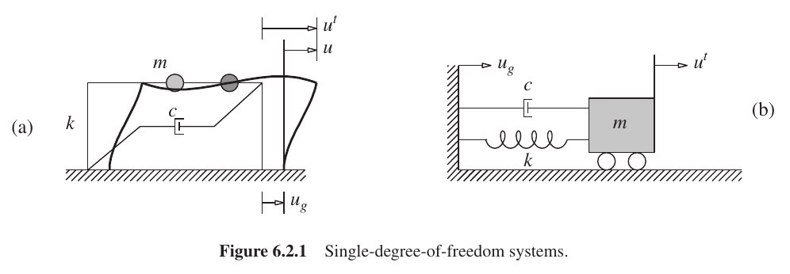
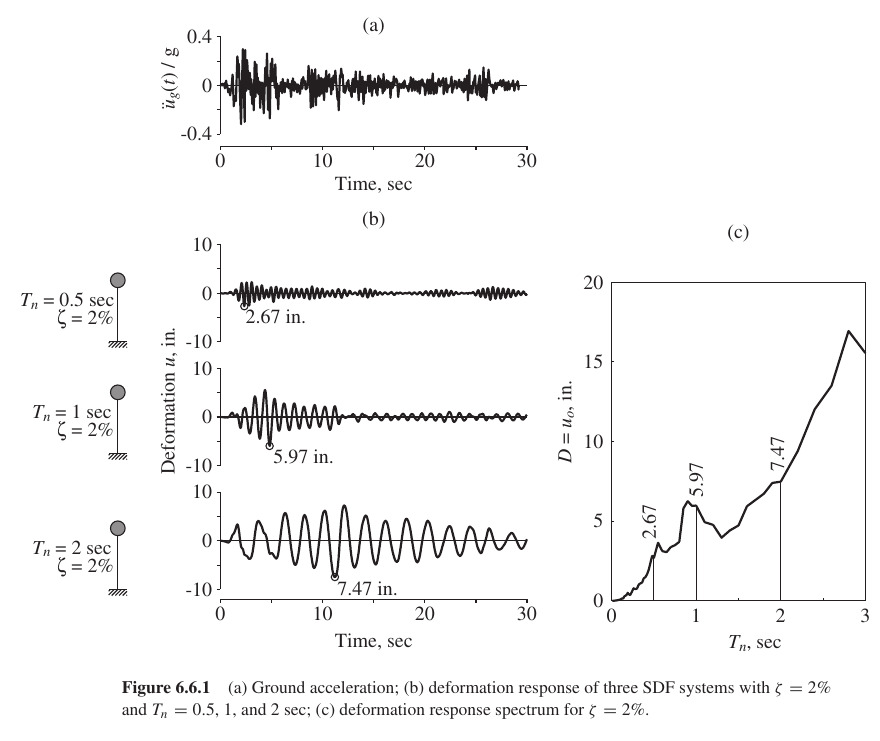
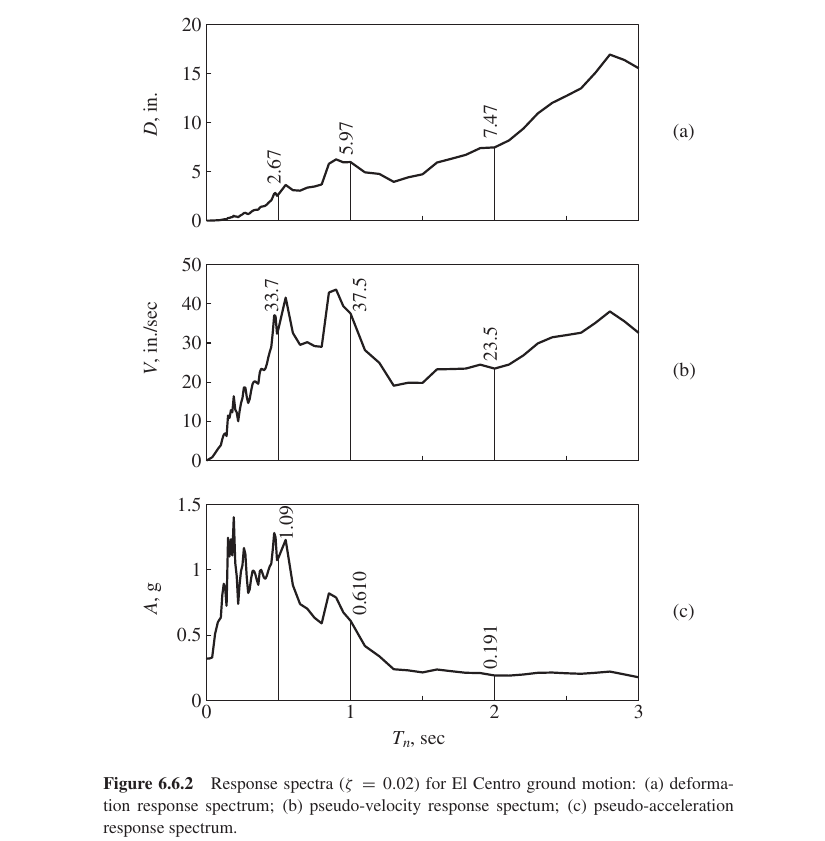

结构动力学读书笔记
Table of Contents
第I篇 单自由度体系
第2章 自由振动
第4章 对任意激励、跃阶激励和脉冲激励的反应
第5章 动力反应的数值计算
第6章 线性体系的地震反应
- 6.1 地震激励
- 地面加速度\(\ddugt\) 定义地面震动
- 强运动加速度仪记录地面震动
- 图6.1.1展示了模拟记录仪和数字记录仪
- 采样周期为1/100到1/50秒
- El Centro地面运动在本书后面经常用到
- 6.2 运动方程
- \(\ddu + 2\zeta\omegan\du + \omegann u=-\uugt\)
- \(u\equiv u(t,T_{n},\zeta)\)
单自由度体系模型
- 弹簧-质量-阻尼系统

- 6.3 反应量
- 位移\(u(t)\) 、速度\(\dot{u}(t)\) 、加速度\(\ddot{u}(t)\)
- 内力与位移线性相关：弯矩、剪力
- 绝对位移\(u^{\mathrm{t}}(t)\) 确定相邻建筑留出间距防止碰撞
- 绝对加速度\(\ddot{u}^{\mathrm{t}}(t)\) 确定传递给设备的运动
- 6.4 反应时程
- 图6.4.1ab比较了三个体系在El Centro地面加速度引起的位移反应
- 用
静力分析由 \(u(t)\) 中每个时刻的位移计算内力 - 等效静力\(f_{\mathrm{s}}(t) = ku(t)\)
- 用刚度 \(k\) 和 \(m\) 表示：\(f_{\mathrm{s}}(t) = m\omegann \ut\)
- 其中角标 \(\mathrm{n}\) 表示的是自然之意
- 引入
伪加速度\(A(t)\) - \(f_{\mathrm{s}}(t) = m\omega^{2}_{\mathrm{n}}u(t) = m A(t)\)
- \(A(t) = \omega^{2}_{\mathrm{n}}u(t)\)
- 由位移计算伪加速度
- 由等效静力通过静力分析计算内力
- 6.5 反应谱的概念
- G. W. Housner 推动了反应谱的广泛应用
- M. A. Biot 在1932年引入了这个概念
- 反应谱
- 横轴是振动周期\(\Tn\) 或圆频率\(\omegann\) 或循环频率\(\fn\)
- 纵轴是该周期或频率对应的反应量峰值(固定阻尼比\(\zeta\))
- 位移反应谱 \(\uo \equiv \maxt \lvert u(t,T_{\mathrm{n},\zeta}) \rvert\)
- 速度反应谱 \(\duo \equiv \maxt \lvert \dot{u}(t,T_{\mathrm{n},\zeta}) \rvert\)
- 加速度反应谱 \(\dduo \equiv \maxt \lvert \ddot{u}^{\mathrm{t}}(t,T_{\mathrm{n},\zeta}) \rvert\)
- 6.6 位移反应谱、伪速度反应谱和伪加速度反应谱
- 6.6.1 位移反应谱
- \(D \equiv u_{\mathrm{o}}\) 为峰值位移

- 6.6.2 伪速度反应谱
- \(V=\omega_{\mathrm{n}}D\)
- 应变能 \(E_{\mathrm{S}_{\mathrm{o}}}=\dfrac{ku^{2}_{\mathrm{o}}}{2}=\dfrac{mV^{2}}{2}\)
- \(V\) 峰值伪速度
- 6.6.3 伪加速度反应谱
- \(A=\omegann D\)
- 峰值基底剪力 \(V_{\mathrm{bo}}=mA=\dfrac{A}{g}w\)
- \(A/g\)
基底剪力系数或侧向力系数 - \(A\) 峰值伪加速度

- 6.6.4 D-V-A联合谱
- A. S. Veletsos 和 N. M. Newmark 在1960年给出了联合形式的地震反应谱
- 意义
- 位移谱表示体系的峰值位移；伪速度谱表示峰值应变能；伪加速度与 等效静力及基底剪力相关
- 由三个谱共同(而不是单独一个)近似估计设计谱的形式
- 6.6.5 反应谱的建立
已知\(\ddot{u}_{\mathrm{g}}(t)\) ，按如下步骤建立反应谱
- 数值定义\(\ddot{u}_{\mathrm{g}}(t)\) ，按时隔0.02秒
- 选择\(T_{\mathrm{n}}\) 和\(\zeta\)
- 数值方法求解\(u(t)\)
- 确定峰值\(u_{\mathrm{o}}\)
- 谱的纵坐标\(D\) 、\(V\) 、\(A\)
- 在所有可能体系的\(T_{\mathrm{n}}\) 和$ζ$中，重复第2到第5步
- 制作反应谱
- 6.6.1 位移反应谱
- 6.7 概据反应谱确定结构峰值反应
- 例6.2 完整显示了线弹性单自由度体系的地震响应分析
- 例6.3 说明了错误的优化方案。将结构设计得更刚带来了更大的惯性力， 伪加速度大了5倍；
- 例6.4 一层钢混框架
- 例6.5 倾斜地面建筑物
- 例6.6 三跨箱形梁桥
- 6.8 反应谱的特征
- 分为三个谱区：位移敏感区(柔)、速度敏感区、加速度敏感区(刚)
- 用正规的曲线拟合技术用选定形状的理想化反应谱代替实际值
- 分隔谱区的周期、各段放大系数随地面运动的不同而不同、特别是峰值加 速度、速度和位移的相对值
- 这些地需运动的特征取决于震级、断层距、震源、场地地质情况和场地条件
- 6.9 弹性设计谱
- 设计谱由一组光滑曲线或一系列直线组成，每条线对应一个阻尼水平
- 均值反应谱
- 均值加一个标准差反应谱
- 绘制方法
- 参数选择应基于震级、断层机理、地震波传播路径地质和局部场地进行
- 峰值加速度设计值乘以设计谱值即可以得到场地设计谱
- 6.10 设计谱与反应谱的比较
- 图6.10.1显示标准设计谱与反应谱在加速度敏感区吻合较好，但在速度敏 感感区和位移敏感区差别很大
- 图6.10.2显示差别依旧存在
- 设计谱并不是为了与任何特定地面运动反应谱相吻合，而是使之能代表多 个地面运动的平均特征
- 6.11 设计谱与反应谱之间的区别
- 构造设计谱的方法是地震危险性分析的基础上得到的一致危险性谱
- 6.12 速度反应谱和加速度反应谱
- 式(6.12.1)–(6.12.4)奠定了后面两个比较的逻辑基础
- 6.12.1 伪速度谱和相对速度谱
- 在长周期范围内，\(V\) 比\(\dot{u}_{\mathrm{o}}\) 明显较小，因为位 移有限，而\(T_{\mathrm{n}}\) 越大\(V\) 越小；而此时速度峰值趋近于 地面运动速度峰值
- 在短周期内，比较(6.12.2)和(6.12.3)论证了二者相似的原因
- 6.12.2 伪加速度谱和加速度谱
- 无阻尼体系，由运动平衡方程即可看出二者是相同的
- \(\dduto=-\omegann\ut\)
- \(\dduto=\omegann \uo=\omegann D=A\)
- 式(6.12.4)表明\(A\) 与\(\dduto\) 之间的差别会随阻尼的增加而增加
- 在很长一段周期范围内，伪加速度都可以看作是真实加速度的近似
第7章 非弹性体系的地震反应
第8章 广义单自由度体系
第II篇 多自由度体系
第9章 运程方程、问题表述和求解方法
第11章 结构中的阻尼
第12章 线性体系的动力分析和反应
第13章 线性体系的地震分析
第一部分：反应时程分析
- 13.1 振型分析
- 作用：地震引起的地面运动\(\ddugt\) 作用下结构反应
- 方法：振型分析法
- 假设：所有支撑点上的地面运动是相同的
- 13.1.1 运动方程
\[ \vm \vddu + \vc \vdu + \vk \vu = - \vm \viota \ddugt \]
- 地震反应分析中不需要考虑阻尼矩阵\(\vc\) ，振型阻比就足够了。
- 13.1.2 位移和力的振型展开
- 位移展开：\[\vut = \sumn \vphin \qnt\]
- 有效地震力的空间分布由\(\vs = \vm \viota\) 决定
- 振型惯性力\(\vsn\) 之和的形式： \[\vm\viota=\sumn \vsn = \sumn \Gamman \vm \vphin\] 其中：\[\Gamman = \dfrac{L_{n}}{M_{n}}, L_{n}=\vphint \vm \viota, M_{n}=\vphint \vm \vphin \]
- 第\(n\) 阶振型对\(\vm \viota\) 的贡献为：\[\vsn = \Gamman \vm \vphin\]
- 13.1.3 振型方程
- 运动方程中荷载项为\(-\vm \viota \ddugt = - \sumn \vsn \ddugt\)
- 考虑到力的振型展开，对于第\(n\) 阶振型，只考虑荷载 \(\vsn \ddugt = \Gamman \vm \vphin \ddugt\)
- 按振型分析，第\(n\) 阶振型广义力为：\(\Pnt=\vphint \Gamman \vm \vphin \ddugt = \Gamman M_{n} \ddugt\)
- 转化为标准型时荷载项即为：\(\dfrac{\Pnt}{M_{n}} = - \Gamman \ddugt\)
- 方程(13.1.7)求解可以转化为方程(13.1.8)求解\(\Dn\) ,后\(\qnt=\Gamman \Dnt\)
- 由 \(\vm\viota=\sumn \vsn = \sumn \Gamman \vm \vphin\) 可知：\[\iota = \sumn \Gamman \vphin\]
- \(\viota\) 称为振型参与系数。因与振型正则化方式有关，实际上并不采用
- 振型贡献系数将用来用研究建筑物的地震效应
- 13.1.4 振型反应
- 位移 \[\vunt=\vphin \qnt = \Gamman \vphin \Dnt\]
- 单元力用等效静力形式进行静力分析求解
- 等效静力为 \(\vfnt = \vk \vunt\) ，代入\(\vk= \vm \omegann\) 及振型位移得： \[\vfnt = \vm \omegann \Gamman \vphin \Dnt = \vsn \omegann \Dnt = \vsn \Ant \]
- 等效静力分为两部分：
- 将第\(n\) 阶振型对\(\vpefft\) 的空间分布\(\vm\viota\) 的贡献\(\vsn\)
- 第\(n\) 阶振型单自由度体系在\(\ddugt\) 作用下的伪加速度反应
- 第\(n\) 阶振型任意反应量\(\rt\) 的贡献\(\rnt\) 通过在\(\vfnt\) 作用下结构的静力分析确定
- 定义\(\rnst\) 为\(\vsn\) 作用下\(r\) 的静力值，则有：\(\rnt = \rnst \Ant\)
- 位移也可表达成上式
- 由\(\vk \vunst = \vsn\) 得：\(\vunst = \vk^{-1} \vsn = \vk^{-1} \Gamman \vm \vphin\)
- 由\(\vk^{-1}\vm = \dfrac{1}{\omegann}\) ，有\(\vunst = \dfrac{\Gamman}{\omegann}\vphin\)
- 则：\(\vunt = \dfrac{\Gamman}{\omegann} \vphin \Ant\)
- 13.1.5 总反应
- 位移：\(\vut = \sumn \vunt = \sumn \Gamman \vphin \Dnt\)
- 反应：\(\rt = \sumn \rnt = \sumn \rnst \Ant\)
- 13.1.6 振型分析的解释
- 步骤
- 计算结构的振动特性(固有频率和振型)
- 将力分布向量\(\vm\viota\) 展开成其振型分量\(\vsn\)
- 做\(N\) 组振型分析
- 在\(\vsn\) 作用下做结构静力分析\(\rnst\)
- 在\(\ddugt\) 作用下第\(n\) 阶单自由度体系的动力分析\(\Ant\)
- 振型分析响应\(\rnt=\rnst \Ant\)
- E13.1展示了完整的地震反应时程分析
- 步骤
- 13.1.7 对基础转动的反应分析
- \(\vpefft= - \vm \viota \ddthetagt\)
- \(\viota\) 为由单位基础转动\(\theta_{\mahtm{g}} =1\) 引起的所有自由度的静力位移向量
- 13.2 具有对称平面的多层建筑物
- 将13.1节的振型分析法分析多层建筑物
- 运动方程 \[ \vm \vddu + \vc \vdu + \vk \vu = - \vm \unity \ddugt \]
- 13.2.1 有效地震力的振型展开
- 由于\(\vm\) 为对角矩阵，可以书写中简化为(13.2.3)形式
- E13.2演示了空间分布\(\vm \unity\) 的振型展开
- 13.2.2 振型反应
- 定义了$M**n$和$h*}n$不知道是意义何在，建议给出译者说明在节13.2.5中给出解释
- 13.2.3 总反应
- 式(13.2.11)用来计算楼层加速度，但加速度用来干嘛呢
- 13.2.4 小结
- 基本同此前的振型分析，只是振型分量\(\vsn\) 表达稍简化
- 13.2.5 有效振型质量和有效振型高度
- \(M^{*}_{n}\) 称为基底剪力有效振型质量，或有效振型质量
- \(h^{*}_{n}\) 称为基底力矩有效振型高度，或有效振型高度
- 13.2.6 例题：五层剪切型框架
- 13.2.7 带附属结构的四层框架
- 13.3 具有非对称平面的多层建筑物
- 13.4 平面对称多层建筑物的扭转反应
- 13.5 对多点支座激励的反应分析
- 13.6 结构的理想化与地震反应
第二部分：反应谱分析
- 13.7 根据地震反应谱求峰值反应
- 结构设计通常基于地震引起的反应持续时段内内力和变形的峰值
- 多分量同时作用及多支点支座扰动的RSA应该关注
- 13.7.1 峰值振型反应
- \(\rno\) 与第6章 \(\uo\) 中的角标\(\mathrm{o}\) 不同，前者表示带符号的峰值，后者表示绝对值最大值
- 13.7.2 振型组合规则
- 各振型的峰值并不是同时达到的，这就会产生一个问题：怎样组合峰值 振型反应\(\rno\) 来确定总反应的峰值\(\ro \equiv \maxt \lvert \rt \rvert\)
- 绝对相加ABSSUM，\(\ro \leqslant \sumn \lert \rt \vert\) 过于保守，实用中并不普遍
- SRSS： \(\ro \cong \left( \sumn \ro^{2} \right) ^{1/2}\)
- 什么是稀疏固定频谱结构
- CQC：\(\ro \cong \left( \sumn \sumn \rhio \rio \rno \right) ^{1/2}\)
- CQC展开：\(\ro \cong \left( \sumn \rno^{2} + \sumin \rhio \rio \rno \right) ^{1/2}\)
- 图13.7.1显示了两类CQC规则的差异
- 并在稍后解释了SRSS规则局限性的原因
- 对于小阻尼结构，频比在1.3以上时，相关系数基本为零
- 13.7.3 反应谱分析的解释
- RSA是地震激励作用下结构动力分析的一种方法，但简化为静力分析
- 通过\(\vsn\) 作用下结构的静力分析得到振型静力反应\(\rnst\)
- 再乘以反应谱纵坐标\(\An\) 得到峰值振型反应\(\rno\)
- RSA方法仍然是一种动力分析方法，因为它利用了结构的振动特性和用 反应谱(设计谱)所表征的地面运动的动力特性
- 13.8 具有对称平面多层建筑物
- 13.9 具有非对称平面多层建筑物
- 13.10 基于反应谱的同步反应包络
- 13.11 多分量地面运动作用下的峰值反应